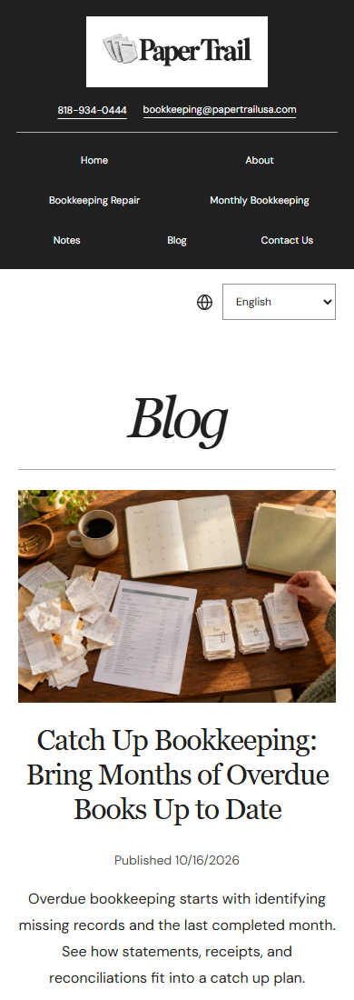
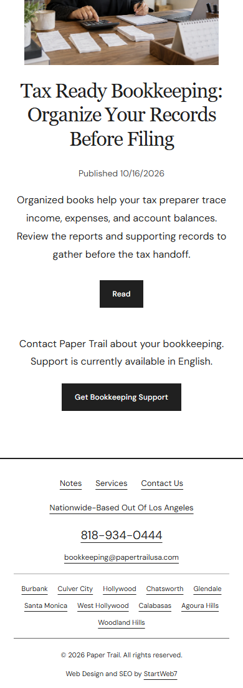
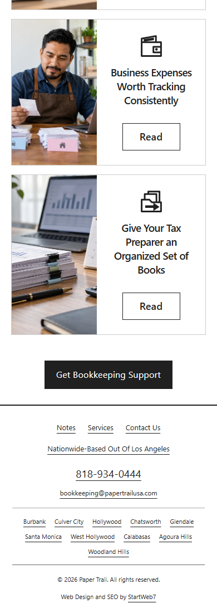
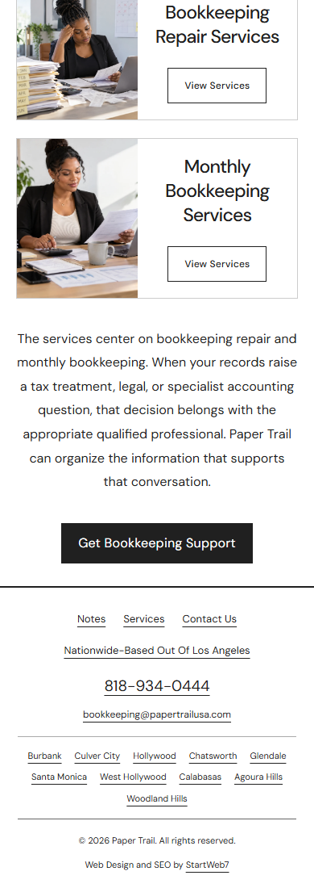
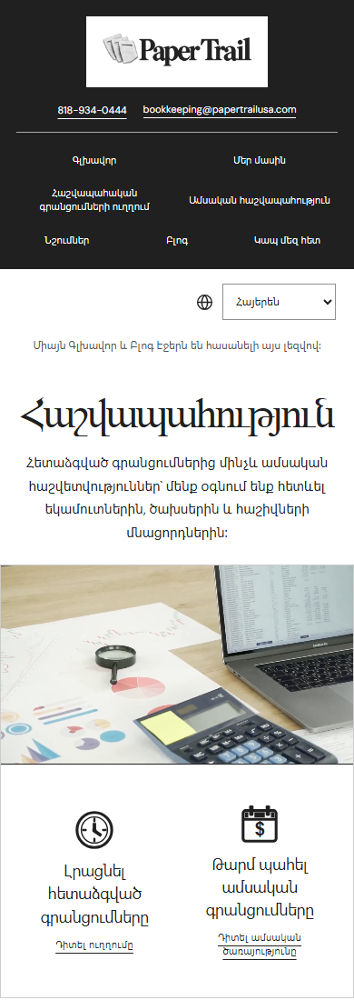
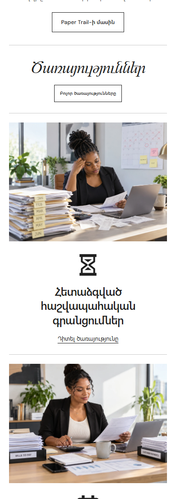

Mobile menu and Blog corrections
The dropdown starts directly below the bookkeeping row, remains open while selecting a destination, and keeps the page heading below the panel. Real touch taps reached Monthly Financial Reports at 320, 390 and 430 pixels.
Blog titles, dates and previews are centered on phones. Home uses Get Bookkeeping Support, and Blog has a localized support description and Contact link. Language notices have more space below the selector. Services headings stack above their buttons when the translated text would collide. The large gap above the About support button is reduced.
Passed 30 page and width checks, 60 language checks and three real touch navigation checks. No observed overflow, missing images or JavaScript exceptions. Desktop and iPad layouts are preserved. No Google API calls, form submissions, commits, pushes or publication.












